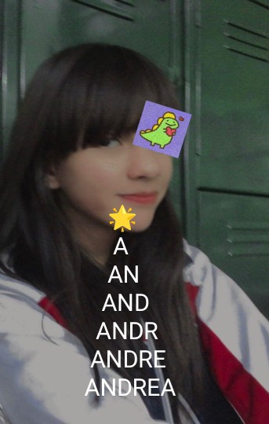

Ayayay monga, Sabia que dirias si mujaja 😈😌, mueres de amor por mi pes jsjsjs 💓
Te amo y quiero mucho aunque te lo digo casi siempre y no me cansaria de decirtelo, ya que eres muy importante y tan unica para mí. Jamas en mi vida pense que conoceria a una chica tan fantastica como tú, aunque venias media rarita, pero sabes me sentia tan bien que compartir mi tiempo contigo era algo que queria, no que debia. Quiero seguir compartiendo muchisimas cosas, momentos, todo contigo, sinceramente no confiaba para nada en ti, pero algo me hizo ver que estaba equivocado. Contrui tantas barreras en mi corazon para que nadie pudiera acercarse a el, pero tu presencia fue la clave a poder seguir creyendo en el amor, tal vez este mundo no es tan malo como lo aparentaba, no si te tengo a mi lado. se que si caigo tú me levantaras y si me rindo se que me haras cambiar de opinion. Disculpa y perdoname por todas las cosas que hice, no era mi intecion y eso no lo justifica, pero en serio te demostrare que vale la pena creer en mi y estar conmigo. Odio la distancia, ya que no puedo estar ahi para decirtelo, aunque se que me trabaria la lengua y estaria palteado. Pero a veces Dios pone las pruebas mas dificiles a sus mejores guerreros, no recuerdo si era asi 😅, pero la cosa es que superare todo y pronto poder estar contigo. GRACIAS por todo monga TE AMO MUCHO ❤️, te lo digo de corazon. Diria mas cosas, pero prefiero demostrarlo con acciones, pero si me pongo celoso, envidioso, etc, eso es porque... es parte de mi manera de amar.
P.D.: Soy muy perfeccionista, las tildes creo que me comi algunas, pero la intencion es lo que cuenta je. ERES MI CHICA FAVORITA TE AMO ❤️
